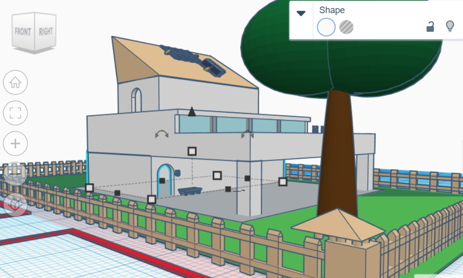
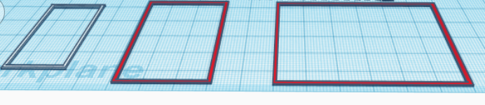
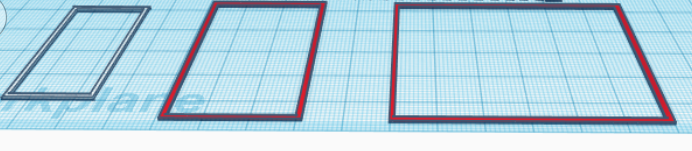
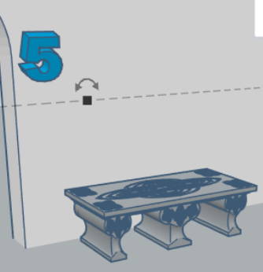
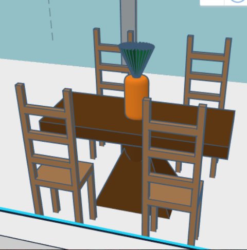
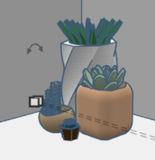

Tinkercad Project #3
One of our first projects using tinkercad was to use basic shapes such as cubes, roof, semi-circle, circle, etc. to create a house.

From there, I elaborated on the basic structure to create the final product which included a balcony, a fence, a patio, door holes, and a tree.
During the project, I practiced the skills of making holes inside the house for the rooms, changing the colors of the windows and shapes, and making a floor plan.


 

I also practiced copying and uploading other user's shapes. I utilized the skills of using the grid scale button and changing the dimensions in order to fit into each other to make it water tight with no gaps.
  